医疗大健康 / 多角色协作平台
省级干部保健项目管理平台
面向省级干部保健业务的一体化综合管理平台，重点解决多单位、多角色协同下的复杂保健任务流转问题。

问题
项目覆盖健康档案、巡诊、医疗服务协同、年度体检安排与健康风险预警等核心场景，涉及省保健办、保健单位、医疗机构等多方角色。此前各单位系统长期独立运行，数据与流程相互割裂；在年度体检等长链路任务中，不仅协作效率低，也增加了信息遗漏和误操作风险。
细节
- 角色
- 主 UI / UX 设计师
- 周期
- 2025.06-10
- 职责
- 需求分析、部分原型、设计规范、主要页面设计、交付验收与迭代协同
精彩片段
将分散在多个单位的保健业务整合至统一平台，让不同角色在明确权限边界的前提下连续协作。
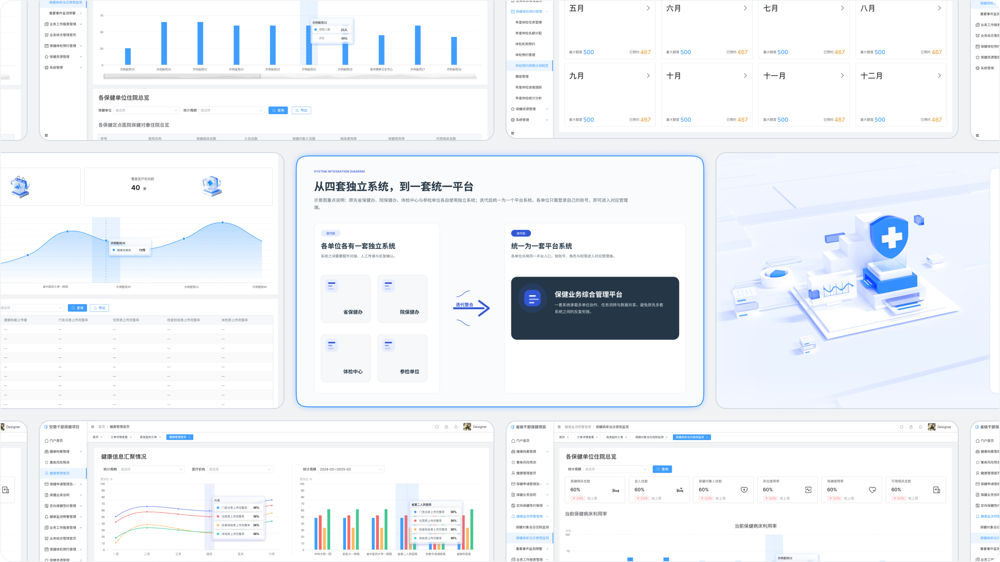
发现
从需求沟通会理解项目目标
我与产品经理共同参加甲方需求会议，围绕现有系统与跨单位协作流程梳理出三项核心目标：
- 提升保健相关工作的整体效率；
- 补齐旧平台功能缺失、体验较差与界面陈旧等问题；
- 整合多单位独立系统，降低协作与使用成本。
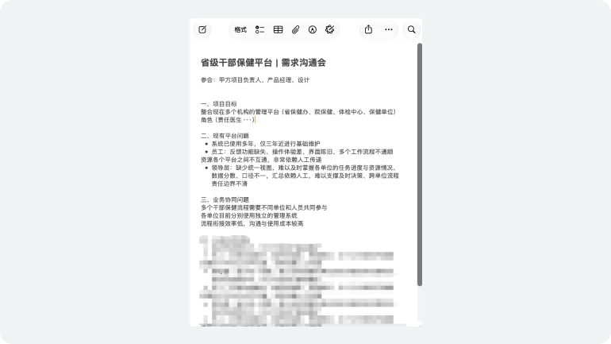
把反馈归纳成四类旧系统问题
结合需求会议、甲方反馈与旧系统页面，将问题归纳为系统协同、功能完整性、操作体验和视觉呈现四个方向，为后续策略建立共同判断依据。
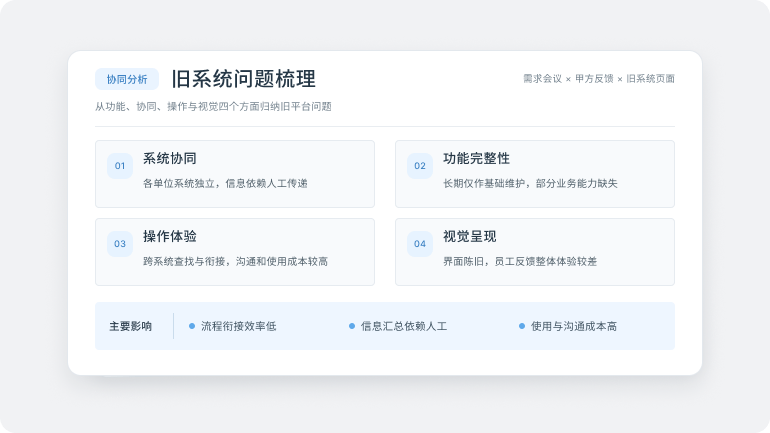
策略
同一平台承载多方协作，不同账号进入各自职责对应的管理端。
高层路线图
统一任务与流程框架
优先梳理跨角色、跨单位核心任务，把任务对象、状态流转和协作链路统一。
统一页面规则与设计规范
补齐页面结构，统一组件规则、状态表达等设计规范，降低多模块并行设计和后续研发交付不一致的风险。
持续交付与迭代
系统上线后继续配合研发验收、问题修正与业务变化，保持多角色协作体验的一致性。
流程验证
以年度干部保健体检预约为代表流程，把分散在多个系统中的业务整合到统一平台；不同单位与角色通过权限账号进入对应子系统，让信息在关键环节连续流转。
年度干部保健体检预约
围绕同一体检任务，让五个关键节点在四方角色之间连续流转。
- 01系统创建体检任务省保健办
- 02体检额度分配省保健办
- 03体检机构预约参检单位（保健单位）
- 04排期确认并同步院保健办
- 05报告查询体检中心
设计系统与规范
为了提高大型后台系统的一致性与交付效率，我建立了可供设计师和工程师共同使用的组件与设计规范。

设计
从结构验证到高保真交付，重点展示能够说明业务判断和系统关系的设计成果。
保健工作管理平台
健康管理首页
- 重疾风险预测
保健业务综合管理
- 保健对象健康管理
- 保健资源管理
- 保健申请与档案管理
- 保健业务协同
- 定向保健签约管理
- 业务工作报表管理
- 健康监测预警管理
- 保健资源管理
保健体检预约管理
- 年度体检任务与名额管理
- 体检机构与排期预约
- 年度体检进度与分析
系统管理

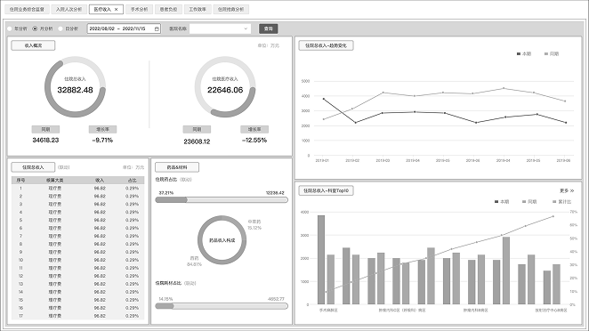
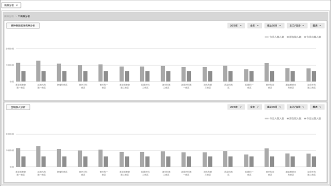
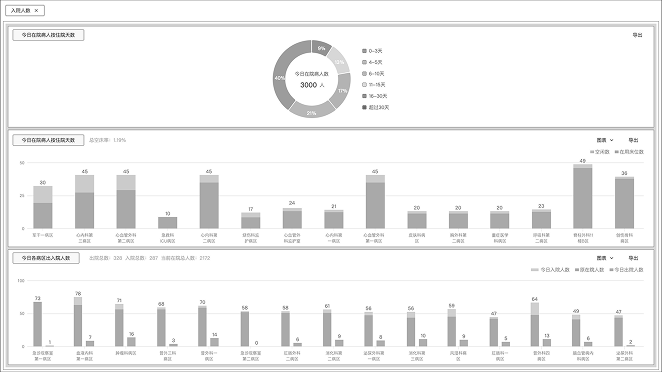


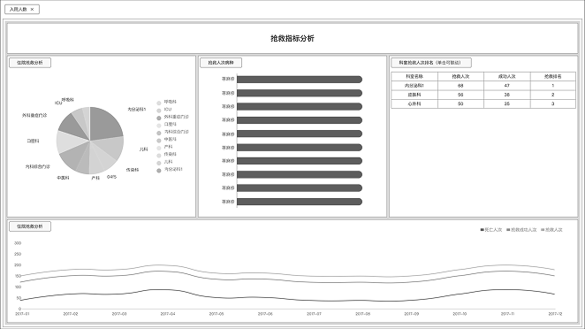

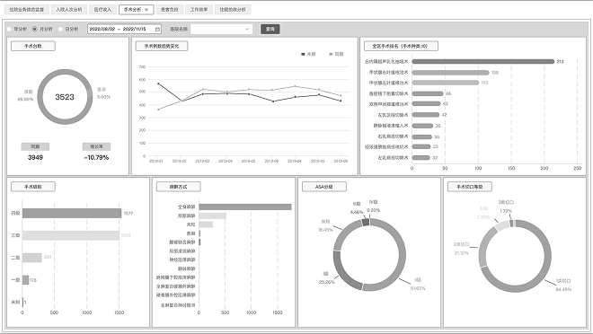
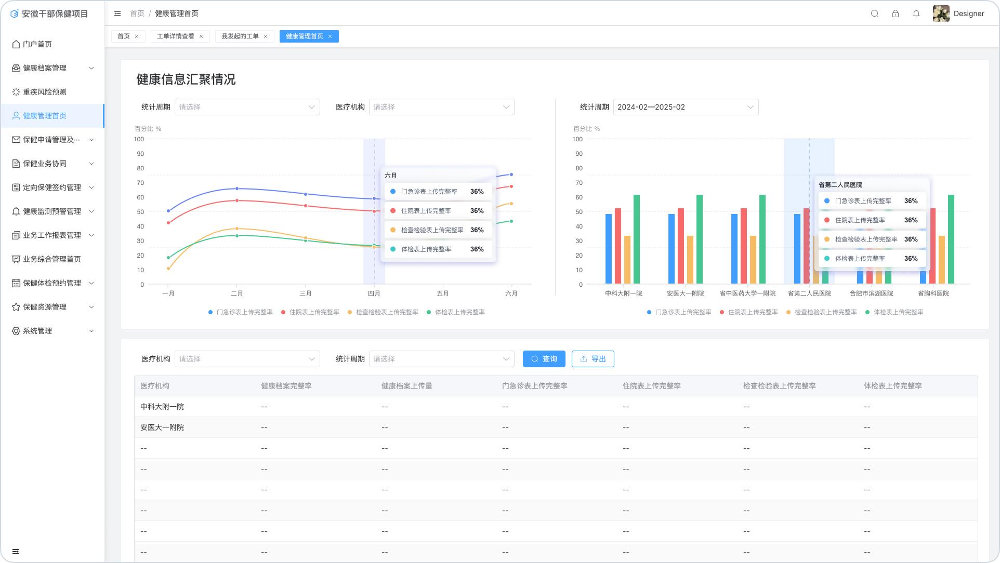
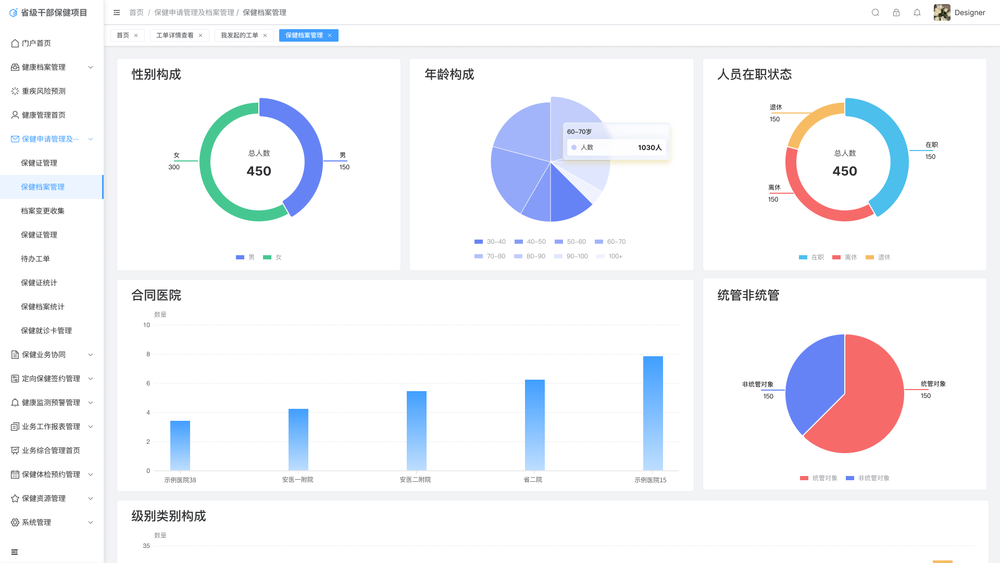


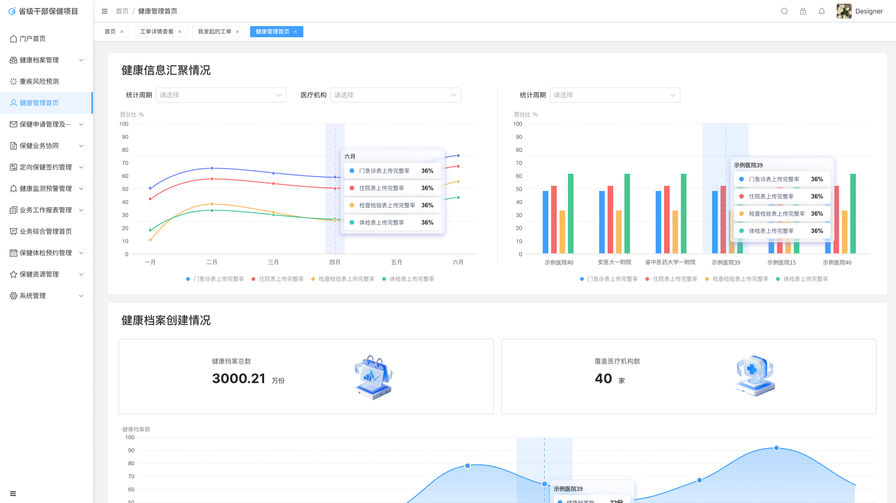


成果
180+ / 120+
项目规模与个人产出
项目整体包含 180+ 个页面；其中我主导完成约 120 个页面，并统一检查、整合辅助设计师的其余页面。
3 类核心产出
完整设计交付链路
覆盖信息架构、部分原型与线框、高保真 UI，并延伸至规范、切图、研发协同和上线后的修改支持。
回顾
如果重新开始
我会进一步前置多角色协同流程的验证。进入大规模页面设计前，先梳理角色、权限、任务状态与数据流，再用低保真原型确认关键节点，减少后期因业务理解偏差产生的返工。
经验沉淀
180+ 页的项目让我意识到，规模化设计的核心不是完成更多页面，而是尽早建立可复用的结构与规则，让多位设计师与研发人员在同一标准下协作。
权衡取舍
B/G 端系统需要在流程效率、业务准确性与数据安全之间取得平衡。简化操作的同时，关键节点仍需保留权限约束、状态确认和过程记录；在交付周期与开发成本限制下，部分通用组件基于 Element Plus，图表结合 ECharts 进行适配。